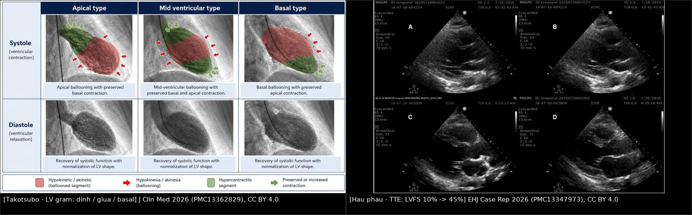
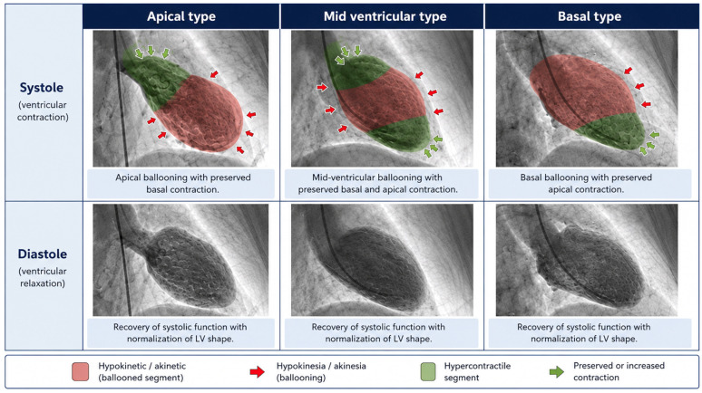
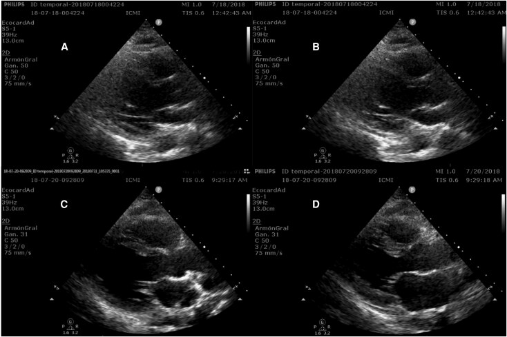

1842 — Bệnh cơ tim do stress (takotsubo) ở ICU và hậu phẫu: khi tim "choáng" vì catecholamine / Takotsubo syndrome in the ICU and postoperative patient
Tags: pattern:roi-loan-van-dong-vung pattern:phu-co pattern:ballooning vung:cotim score:InterTAK protocol:MRI-tim protocol:sieut-am-tim protocol:CTA-vanh
Mức chắc chắn (certainty): tổng hợp y văn (literature synthesis) — biên từ tổng quan chẩn đoán TTS (J Clin Med 2026, PMC13362829, CC BY 4.0), nghiên cứu T2 mapping tiên lượng 110 ca (Eur Heart J Cardiovasc Imaging 2026, PMC13721763, CC BY 4.0), loạt 4 ca hậu phẫu thẩm mỹ cần VA-ECMO (Eur Heart J Case Rep 2026, PMC13347973, CC BY 4.0) và ca hậu phẫu ở người trẻ (Clin Case Rep 2026, PMC13500994, CC BY 4.0). Số liệu lấy từ toàn văn/bảng, không viết từ abstract gián tiếp.
1. Tổng quan — vì sao tim đang bình thường bỗng "phình" ra và hồi phục
1.1. Cơ chế: bão catecholamine + chuyển tín hiệu thụ thể
- Takotsubo (TTS, stress cardiomyopathy) là rối loạn vận động vùng thất trái thoáng qua, không giải thích được bằng một nhánh động mạch vành (PMC13362829). Cơ chế không chỉ là "catecholamine cao" đơn thuần mà là phối hợp 3 tầng: catecholamine trực tiếp gây độc tế bào cơ tim, rối loạn chức năng vi mạch và loạn điều hòa thần kinh–tự chủ (PMC13362829).
- TẠI SAO đỉnh thất lại "chết" trước: mật độ thụ thể β ở đỉnh thất cao hơn, và nồng độ epinephrine rất cao làm thụ thể β₂ chuyển từ tín hiệu Gs (co bóp) sang Gi (ức chế) — cơ chế "epinephrine switch". Đỉnh thất bị ức chế co bóp, trong khi nền thất còn đáp ứng catecholamine và tăng co bóp bù trừ. Đây là lý do hình ảnh kinh điển: đỉnh thất giãn – nền thất co mạnh (apical ballooning với basal hyperkinesia).
- Viêm cũng đóng vai trò tiên lượng: trong đăng ký 385 ca TTS, CRP > 19 mg/L lúc xuất viện gắn với hồi phục thất trái không hoàn toàn và tăng tử vong tim mạch/nhập viện vì suy tim dài hạn (PMC13362829). Tức là một bệnh "thoáng qua" về cơ học vẫn có di chứng viêm.
1.2. Vì sao hình ảnh trông như vậy — vật lý của phù và LGE
- Siêu âm/LV gram: vùng rối loạn vận động khu trú vượt quá một lãnh thổ vành (thường đỉnh + giữa thất) cạnh vùng co bóp mạnh bù trừ ở nền. Trên LV gram, hình dạng tâm thu giống "bình bát" (takotsubo) — đáy hẹp, thân giãn.
- Phù cơ tim trên MRI (T2): phù = nước tự do ngoại bào tăng → thời gian T2 kéo dài → tín hiệu sáng trên T2W/STIR và T2 mapping tăng. Phù khớp đúng vùng rối loạn vận động, không theo lãnh thổ vành.
- LGE: gadolinium ứ lại ở chỗ mất tế bào/tăng khoảng ngoại bào (hoại tử, xơ). TTS không gây hoại tử lan rộng, nên LGE thường vắng hoặc chỉ là vệt mờ thoáng qua — khác nhồi máu (LGE dưới nội tâm mạc/xuyên thành theo lãnh thổ). Câu chốt: TTS = phù có hồi phục mà không mất tế bào (PMC13362829).
- Vì phù là nước, không phải mô chết, nên cơ tim hồi phục hoàn toàn về hình thái khi phù rút: ảnh LV gram hàng dưới cho thấy thì tâm trương trở lại hình dạng bình thường ở cả 3 kiểu hình.
1.3. Con số phải nhớ
| Chỉ số | Giá trị | Nguồn |
|---|---|---|
| Tuổi trung vị / tỷ lệ nữ (110 ca có CMR + mapping trong 30 ngày) | 68 tuổi (91% nữ) | PMC13721763 |
| T2 toàn cơ tim trung vị | 56 ms (IQR 53–60) | PMC13721763 |
| Ngưỡng T2 dự báo MACE 1 năm | ≥ 63 ms: AUC 0,671 · Se 56% · Sp 89% | PMC13721763 |
| Biến cố MACE (theo dõi trung vị 763 ngày) | 15,5% (17/110) | PMC13721763 |
| Ca hậu phẫu thẩm mỹ, 27–34 tuổi, sốc tim kháng trị | 4/4 cần VA-ECMO, LVFS 10% → 45%, sống 100% | PMC13347973 |
| Viêm tồn dư (CRP > 19 mg/L lúc ra viện, 385 ca) | hồi phục thất trái kém + tăng tử vong/nhập viện dài hạn | PMC13362829 |
2. Mẫu hình + chẩn đoán phân biệt theo kiểu hình và bối cảnh (Gamut)
2.1. Gamut theo kiểu hình — không chỉ có "đỉnh thất"
- Đỉnh thất (apical, kinh điển, thường gặp nhất): rối loạn vận động đỉnh + giữa thất, nền tăng co bóp. Dễ nhận nhất, nhưng không phải tiêu chuẩn bắt buộc.
- Giữa thất (mid-ventricular): đỉnh còn co bóp, phần giữa giãn — dễ bị đọc thành bệnh mạch vành hoặc bệnh cơ tim khác.
- Nền thất (basal/"reverse"): nền giãn, đỉnh co bóp mạnh; hay gặp trong bệnh cảnh thần kinh cấp (SAH, động kinh) và ở người trẻ hơn.
- Ổ khu trú (focal) và toàn bộ (global): focal bắt chước nhồi máu khu trú; global bắt chước suy tim cấp do bất kỳ nguyên nhân.
- Hai thất (biventricular): thêm rối loạn vận động thất phải → sốc, thở máy kéo dài, tiên lượng nặng hơn.
- Nguyên tắc: chẩn đoán dựa vào "rối loạn vận động vùng vượt quá một lãnh thổ vành + hồi phục", không dựa vào sự hiện diện của ballooning đỉnh (PMC13362829).
2.2. Gamut theo bối cảnh ICU/hậu phẫu — vì sao dễ bỏ sót
- TTS do thể chất (physical TTS) bị nhận diện thiếu và nặng hơn TTS do cảm xúc: nhiều biến chứng hơn, tiên lượng xấu hơn (PMC13362829). Hậu phẫu, nhiễm khuẩn huyết, suy hô hấp, bệnh thần kinh cấp, ung thư đều là yếu tố khởi phát thứ phát (PMC13362829).
- Trong phòng mổ/ICU bệnh nhân không "kể" được đau ngực: dấu hiệu khởi phát thường là tụt áp khi khởi mê, khó cai máy thở, loạn nhịp, phù phổi cấp — tức là sốc không rõ nguyên nhân chứ không phải "hội chứng vành cấp điển hình".
- Khi bệnh nhân đã có sốc nhiễm khuẩn, TTS và bệnh cơ tim do nhiễm khuẩn (septic cardiomyopathy) chồng lấp nhau: cả hai đều giảm co bóp toàn bộ, nhưng TTS có vùng điển hình + hồi phục nhanh.
- Loạt 4 ca hậu phẫu thẩm mỹ (27–34 tuổi) cho thấy người trẻ hoàn toàn khỏe mạnh vẫn có thể sốc tim kháng trị trong phòng mổ: TEE thấy ballooning, LVFS 10%, cần VA-ECMO, và hồi phục hoàn toàn (PMC13347973). Đây là lý do không được mặc định "trẻ + sốc = sốc phản vệ".
3. Bảng so sánh phân biệt (ma trận đối chiếu)
| Thực thể (entity) | Hình ảnh điển hình | Chốt vào (rule-in) | Chốt loại (rule-out) | Gợi ý xác nhận |
|---|---|---|---|---|
| Takotsubo | Ballooning đỉnh/giữa thất + nền tăng co bóp; T2 phù khớp vùng rối loạn; LGE vắng/mờ | Rối loạn vận động vượt quá 1 lãnh thổ vành + hồi phục trong ngày–tuần; trigger rõ (mổ, sepsis, stress) | LGE dưới nội tâm mạc theo lãnh thổ vành + troponin rất cao → nhồi máu | Echo sớm + lặp lại; CMR có mapping; chụp vành loại trừ |
| Nhồi máu cơ tim / MINOCA có tổn thương | Rối loạn vận động đúng một lãnh thổ; LGE dưới nội tâm mạc/xuyên thành | Tắc/mảng thủ phạm trên CTA/ICA; LGE theo lãnh thổ | Phù lan ngoài lãnh thổ + hồi phục nhanh → nghĩ TTS | ICA/CTA vành, troponin, LGE |
| Viêm cơ tim do ICI (6162) | Rối loạn vận động lan tỏa/không lãnh thổ; LGE giữa thành/vách; T1/T2 map tăng | Bệnh sử ICI 2–12 tuần; LGE vách; troponin tăng kéo dài | Phù khớp vùng rối loạn + hồi phục không LGE → TTS | CMR mapping, troponin, ngừng ICI |
| Viêm cơ tim tăng bạch cầu ái toan (DRESS) (943) | LGE dưới nội tâm mạc đa ổ + tràn dịch màng ngoài tim; T2 map tăng | Ban + tăng bạch cầu ái toan + men gan; LGE lan | Ballooning điển hình + hồi phục nhanh → TTS | Công thức máu, LGE, sinh thiết |
| Stunned cơ tim do thần kinh (SAH, động kinh) | Ballooning nền thất hoặc đỉnh; T2 phù | Bệnh cảnh thần kinh cấp + ECG QTc dài | Không có tổn thương thần kinh → TTS "tự phát" | CT/MRI sọ, ECG |
| Bệnh cơ tim do nhiễm khuẩn | Giảm co bóp toàn bộ, buồng tim giãn; không vùng điển hình | Sốc nhiễm khuẩn + lactate cao + đáp ứng vận mạch | Vùng rối loạn khu trú + hồi phục → TTS | Echo lặp lại sau 24–72 giờ |
| U tủy thượng thận (pheochromocytoma) | TTS kiểu nền/reverse, có thể tái phát nhiều lần | Tăng huyết áp từng cơn + metanephrine; hồi phục rất nhanh | Không có cơn tăng huyết áp, không khối tuyến thượng thận | Metanephrine, CT bụng |
| Stunning sau thiếu máu tái tưới máu | Vùng rối loạn đúng lãnh thổ đã can thiệp | Tiền sử PCI/tắc mạch + thời điểm khớp | Rối loạn ngoài lãnh thổ + nền tăng co bóp | So với phim can thiệp, LGE |

3.1. Ba câu hỏi đọc ảnh theo thứ tự
- Vùng rối loạn có nằm gọn trong một lãnh thổ vành không? Nếu vượt ranh giới → nghĩ TTS/viêm, không nghĩ nhồi máu.
- Có vùng co bóp tăng bù trừ ở nền không? Có → gợi ý mạnh TTS.
- T2/LGE nói gì? Phù khớp vùng rối loạn + LGE vắng = phù không hoại tử → TTS; LGE rõ theo vùng = mất tế bào.
4. Protocol chụp + hệ phân độ/điểm chuẩn hóa
4.1. Ai chụp gì, khi nào
- Siêu âm tim tại giường (TTE/TEE) — ngay khi nghi ngờ, kể cả trong phòng mổ: trả lời 3 câu — EF, vùng rối loạn, có LVOTO/SAM, hở van hai lá, huyết khối, tràn dịch không (PMC13362829).
- Loại trừ bệnh mạch vành: CTA vành khi bệnh nhân đủ điều kiện và không cần can thiệp ngay; chụp vành xâm lấn khi có ST chênh lên/không ổn định. CTA vành còn giúp thấy huyết khối đỉnh, thuyên tắc phổi, bóc tách ĐMC — các bệnh cảnh hay bị nhầm trong ICU (PMC13362829).
- MRI tim có mapping (T1, T2, ECV, LGE): nên làm khi đã ổn định, trong vòng 30 ngày như thiết kế của nghiên cứu tiên lượng (PMC13721763) — mục đích là đo phù (T2) + loại trừ LGE theo lãnh thổ và tiên lượng (T2 ≥ 63 ms).
- Theo dõi hồi phục: echo lặp lại sau 24–72 giờ nếu đang sốc, và 4–6 tuần để xác nhận hồi phục hoàn toàn — đây là tiêu chuẩn chẩn đoán, không phải tùy chọn.
4.2. InterTAK — xác suất trước khi chụp
- Bộ tiêu chuẩn hiện hành (InterTAK 2018) thay thế dần tiêu chuẩn Mayo: công nhận yếu tố khởi phát cảm xúc – thể chất – thần kinh – nội tiết, kiểu hình không điển hình, thất phải tham gia, và cho phép cùng tồn tại bệnh mạch vành (PMC13362829).
- InterTAK Diagnostic Score 0–100 điểm: nữ (25), yếu tố cảm xúc (24), yếu tố thể chất (13), không có ST chênh xuống (12), tiền sử tâm thần (11), tiền sử thần kinh (9), QTc kéo dài (6). ≥ 70 điểm = xác suất cao; ≤ 30 điểm = thấp. Điểm chỉ dùng để định hướng, không thay chụp vành/echo.
flowchart TD
A[Sốc hoặc đau ngực kiểu vành cấp ở ICU/hậu phẫu] --> B[ECG + troponin + BNP]
B --> C[Siêu âm tim tại giường]
C --> D{Rối loạn vận động vượt quá 1 lãnh thổ vành?}
D -->|Không| E[Theo đường nhồi máu: CTA/ICA vành]
D -->|Có| F{ST chênh lên hoặc không ổn định?}
F -->|Có| G[Chụp vành cấp + xử trí theo ACS]
F -->|Không| H[CTA vành loại trừ bệnh mạch vành]
H --> I[CMR có T1/T2 mapping + LGE khi ổn định, trong 30 ngày]
I --> J{LGE theo lãnh thổ vành?}
J -->|Có| K[Nghĩ nhồi máu/viêm cơ tim - sinh thiết nếu cần]
J -->|Không, phù khớp vùng rối loạn| L[Takotsubo]
L --> M[Điều trị nguyên nhân + theo dõi echo 24-72h và 4-6 tuần]
M --> N{Hồi phục hoàn toàn?}
N -->|Có| O[Xác nhận TTS - tầm soát pheochromocytoma nếu tái phát]
N -->|Không| P[Xem lại chẩn đoán]
4.3. Điều trị — phần ảnh hưởng trực tiếp tới hình ảnh và theo dõi
- Điều trị nguyên nhân khởi phát (ổ nhiễm, đau, thiếu oxy, ngừng thuốc/vận mạch gây giải phóng catecholamine).
- Sốc tim: hỗ trợ tuần hoàn; loạt 4 ca hậu phẫu cho thấy VA-ECMO cứu được bệnh nhân sốc kháng trị và tim hồi phục hoàn toàn (PMC13347973).
- LVOTO + SAM: tránh inotrope và lợi tiểu mạnh — cả hai làm tăng chênh áp đường ra và làm sốc nặng hơn (PMC13362829); dùng thể tích/dãn mạch và thuốc chẹn β khi mạch cho phép.
- Huyết khối đỉnh thất: cân nhắc kháng đông vì nguy cơ thuyên tắc hệ thống (PMC13362829).
- Tái phát: có thể cùng hoặc khác kiểu hình; tái phát nhiều lần/nặng bất thường phải tầm soát pheochromocytoma (PMC13362829).
5. Biến thể bình thường và cạm bẫy
- Tăng co bóp nền thất sinh lý (đặc biệt ở người trẻ, sau vận mạch) có thể bị đọc thành "basal hyperkinesia của TTS" khi không có vùng giãn đỉnh tương ứng — luôn so hai thì và hai mặt cắt.
- ECG hồi phục chậm hơn cơ học: bệnh nhân có thể EF về bình thường nhưng T đảo vẫn còn nhiều tuần; ca hậu phẫu ở người trẻ ghi rõ "hồi phục cơ học có thể đi trước bình thường hóa điện học" (PMC13500994) — đừng vì ECG còn bất thường mà kết luận "chưa hồi phục/không phải TTS".
- T2 tăng ≠ nhồi máu: phù T2 tăng là nước, không phải mô chết; chỉ LGE mới nói mất tế bào. Gọi "nhồi máu" chỉ vì T2 sáng là lỗi hay gặp.
- Nhầm kiểu hình giữa thất/nền với bệnh mạch vành hoặc viêm cơ tim — lý do phải mô tả vùng rối loạn so với lãnh thổ vành, không chỉ "có ballooning hay không" (PMC13362829).
- Satisfaction of search trong ICU: đã tìm ra ổ nhiễm khuẩn rồi thì dễ quy toàn bộ tụt áp cho nhiễm khuẩn và bỏ qua TTS — siêu âm tim vẫn phải làm khi huyết động không giải thích được.
- Bẫy "bình thường" ở người trẻ: 4 ca 27–34 tuổi khỏe mạnh, sốc ngay trong mổ — tuổi trẻ không loại trừ TTS (PMC13347973).
6. Tự lượng giá — Blind Quiz
Ca 1 — Nữ 68 tuổi, khó thở và tụt áp sau mổ cắt ruột thừa, ECG có T đảo trước bên, troponin tăng nhẹ.

- Gợi ý lâm sàng: không đau ngực điển hình, BNP tăng nhiều so với troponin, không có ST chênh lên.
- Câu hỏi: Ba kiểu hình trên LV gram khác nhau ở vùng nào? Dấu hiệu nào cho biết đây không phải tắc một nhánh vành? Vì sao hàng dưới (tâm trương) lại quan trọng?
Bấm để hiện đáp án (findings + chẩn đoán)
- Dấu hiệu: hàng trên (thì tâm thu) — vùng giãn/akinetic (đỏ) ở đỉnh (apical), giữa thất (mid-ventricular) hoặc nền (basal), phần còn lại tăng co bóp (xanh); hàng dưới (tâm trương) — hình dạng thất trở lại bình thường.
- Chẩn đoán: takotsubo — vùng rối loạn vượt quá một lãnh thổ vành và hồi phục, kèm nền thất tăng co bóp bù trừ.
- Vì sao: catecholamine làm thụ thể β₂ chuyển sang tín hiệu ức chế ở vùng giàu thụ thể → giãn khu trú, không có mô chết nên hồi phục.
- Lưu ý: ảnh là hình minh họa kiểu hình (tổng hợp từ tổng quan), không phải ca của bệnh nhân trong câu chuyện.
- Nguồn ảnh: J Clin Med 2026 (PMC13362829), Fig. 1, CC BY 4.0.
Ca 2 — Nữ 31 tuổi, khỏe mạnh, tụt áp trong phòng mổ sau phẫu thuật thẩm mỹ kéo dài.

- Gợi ý: không có bệnh tim trước đó; không đáp ứng vận mạch; TEE thấy giãn vùng giữa–đỉnh.
- Câu hỏi: Hai cặp ảnh A/B và C/D khác nhau ở đâu? Con số nào trên ảnh chứng minh hồi phục? Chẩn đoán phân biệt nào phải loại trừ trước khi kết luận TTS?
Bấm để hiện đáp án
- Dấu hiệu: A/B — thì tâm trương và tâm thu gần như không khác nhau, thành thất dày lên rất ít (LVFS 10%); C/D — cùng bệnh nhân sau đó, thành thất co bóp rõ (LVFS 45%).
- Chẩn đoán: takotsubo hậu phẫu, sốc tim kháng trị — 4/4 ca trong loạt này cần VA-ECMO, tất cả hồi phục chức năng thất và sống 100%.
- Vì sao phải loại trừ trước: sốc phản vệ, sốc nhiễm khuẩn, thuyên tắc phổi, nhồi máu cấp đều gây tụt áp trong mổ; TTS chỉ được chẩn đoán khi có rối loạn vận động vùng điển hình + loại trừ tắc mạch vành.
- Nguồn ảnh: Eur Heart J Case Rep 2026 (PMC13347973), Fig. 1, CC BY 4.0.
Ca 3 — Nam 70 tuổi, suy hô hấp nặng, sốc nhiễm khuẩn; siêu âm tim thấy giảm co bóp toàn bộ, không vùng điển hình.
- Gợi ý: lactate cao, cần noradrenaline liều tăng dần, có ổ nhiễm khuẩn rõ.
- Câu hỏi: Khi nào nghĩ bệnh cơ tim do nhiễm khuẩn thay vì TTS? Xét nghiệm/hình ảnh nào phân biệt? Có nên chụp MRI tim ngay không?
Bấm để hiện đáp án
- Dấu hiệu: giảm co bóp lan tỏa, không có vùng tăng co bóp bù trừ rõ, không có ballooning.
- Chẩn đoán: bệnh cơ tim do nhiễm khuẩn (septic cardiomyopathy) — nhưng phải lặp echo sau 24–72 giờ vì TTS có thể xuất hiện thứ phát trên nền nhiễm khuẩn.
- Phân biệt: TTS có vùng rối loạn khu trú + hồi phục nhanh và BNP/troponin lệch về BNP; septic cardiomyopathy hồi phục theo kiểm soát ổ nhiễm.
- MRI tim: không cấp cứu, làm khi ổn định (trong 30 ngày) để đo T2/LGE và tiên lượng.
- Nguồn số liệu: PMC13362829 (physical TTS nặng hơn, hồi phục nhanh sau khi xử lý nguyên nhân).
Bài liên quan chéo
- 6162 — Viêm cơ tim do thuốc ức chế điểm kiểm soát miễn dịch (ICI)
- 943 — Viêm cơ tim do DRESS
- 820 — MRI tim: LGE và mapping
- 810 — CTA vành và CAD-RADS
- 800 — Tổng quan Tim mạch
- 085 — Độc tính miễn dịch quanh mổ ung thư phổi
Ảnh
1842_takotsubo-balon-dinh_LVgram_PMC13362829.jpg— LV gram 3 kiểu hình (đỉnh/giữa/nền), thì tâm thu và tâm trương.1842_takotsubo-hau-phau_TTE_PMC13347973.jpg— TTE 4 ca hậu phẫu: cấp (LVFS 10%) và hồi phục (LVFS 45%).composite_1842_takotsubo-kieu-hinh-va-hoi-phuc.jpg— ghép đối chiếu, letterbox giữ nguyên tỷ lệ.- Nguồn + giấy phép từng ảnh:
images/CREDITS.md.
Không dùng để chẩn đoán độc lập khi chưa có người hướng dẫn.